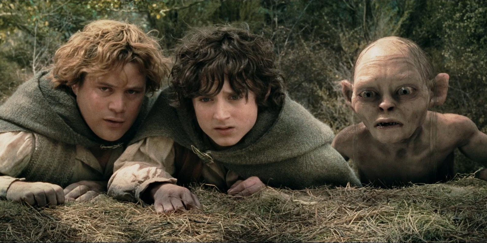

Mój ulubiony artysta to Sylwia Grzeszczak
Mój ulubiony wykonawca muzyczny to Sting. Sting naprawdę nazywa się Gordon Matthew Sumner i urodził się w 1951 roku w Newcastle.
Dorastał w zwyczajnej, angielskiej rodzinie, która utrzymywała się z fizycznej pracy obojga rodziców.
Mój ulubiony film to Władca pierścieni 
Moje ulubione książki to: